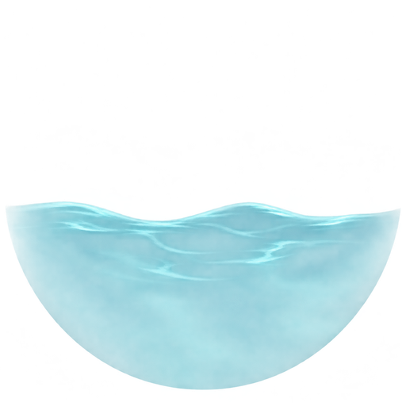

Nakładka zanurzenia
Porównaj czytelność postaci i kształt tafli. Ocenę i uwagi zapisz w karcie „Nakładka zanurzenia” w panelu ikon.
Żeton humanoida
Żeton zwierzęcia

Sama nakładka
Górna część pozostaje przezroczysta. Suwak mnoży przezroczystość zapisaną w grafice.
Przejdź do zapisania ocenyGrafika kandydacka. Przykłady używają istniejących żetonów modułu: Bit-Boys i pies bojowy. Podgląd nie zmienia świata Foundry.